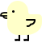
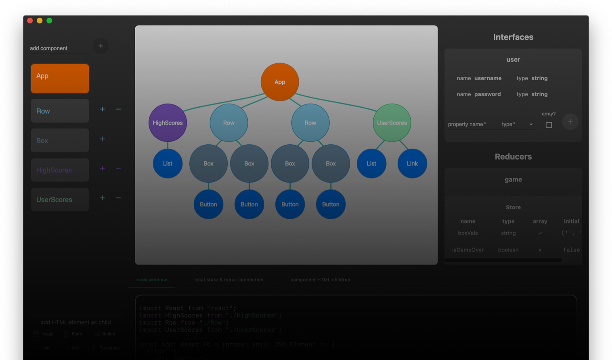
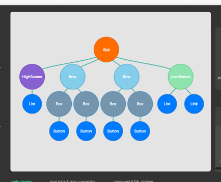
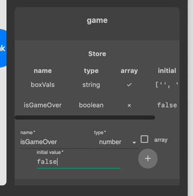
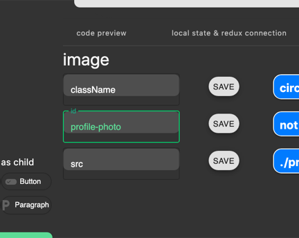
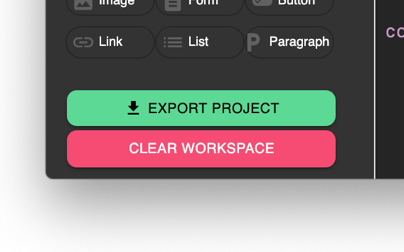
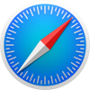
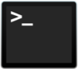

preducks
draw prototypes, export
React/Redux code
download for
macOS
↓
try in browser →


visualize the relationships between components
build Redux reducers and TypeScript interfaces quickly


add element attributes, local state, and redux connections
view your code as it’s generated, and export it all when you’re done

download for
macOS
↓
Windows, Linux
→

try in browser →
app

npm i preducks
check out the CLI on NPM →
Watch
Star
preducks is open source
view the repo on GitHub →